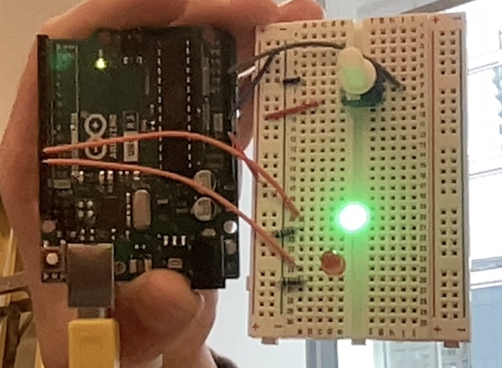
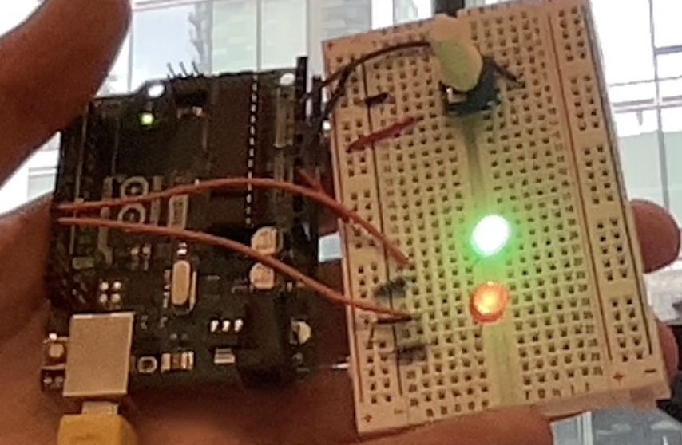
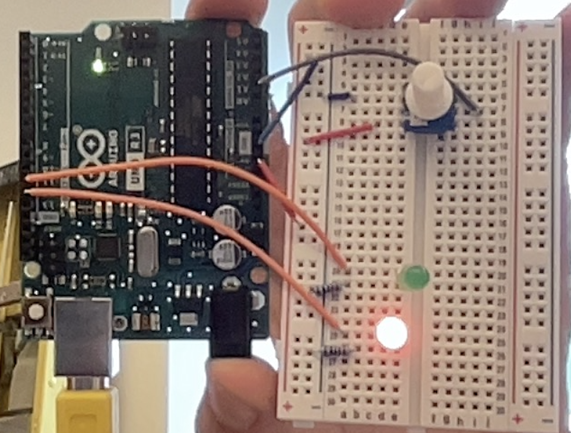

Spencer Paley-Sitko
Digital Portfolio
Digital Portfolio



For the code generation portion of this project, we were left to make our own code with zero outside help. The requirements for the project were, using a potentiometer, when the potentiometer's value was 0, the red LED would be on by itself and when the potentiometer's value was 255, the green LED would be on by itself. When the potentiometer's value was between 0 and 255, both LEDs would be on but they would alternate every half second. I used the analogRead function to read the value of the potentiometer and then divided that value by 4 to convert it to a digital value between 0 and 255. I used multiple if statements to check whether the potentiometer's value was 0, 255, or between those two values and then used digitalWrite to turn the LEDs on or off accordingly.
For the building portion of this project, we still had to do it all ourselves. We needed to turn our simulation into the real build. We used an Arduino R3, a new breadboard, a 10 kilo ohm potentiometer, 2x 220 ohm resistors and a red and green LED. After connecting it all. The red LED was connected to pin 12 on the arduino and the green LED was connected to pin 11. The potentiometer was connected to the breadboard and then I jumped to analog pin A1 on the arduino. We used the 220 ohm resistors on the LEDs.
Fortunately, I didn't run into any errors. I was able to get everything working perfectly on the first try. The only minor thing i ran into was when adding a 3rd behavior for extra house points, I missed an amprosand in one of the if statements resulting in the LEDs not alternating properly. Once I added the amprosand, everything worked perfectly.
The best real life applications of this project are in how the potentiometer contolled the other components on the circuit. A good example would be something like a dual colored lamp that only turned on its soft white light when the potentiometer was turned all the way to one side and only turned on its bright white light when the potentiometer was turned all the way to the other side.